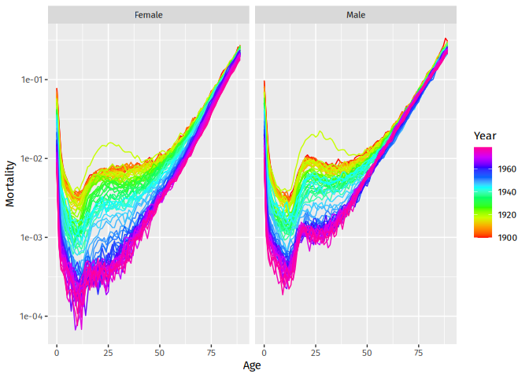

The goal of vital is to allow analysis of demographic data using tidy tools.
Installation
You can install the stable version from CRAN:
pak::pak("vital")You can install the development version from Github:
pak::pak("robjhyndman/vital")Examples
First load the necessary packages.
vital objects
The basic data object is a vital, which is time-indexed tibble that contains vital statistics such as births, deaths, population counts, and mortality and fertility rates.
Here is an example of a vital object containing mortality data for Australia.
aus_mortality
#> # A vital: 300,879 x 8 [1Y]
#> # Key: Age x (Sex, State, Code) [101 x 27]
#> Year Age Sex State Code Mortality Exposure Deaths
#> <int> <int> <chr> <chr> <chr> <dbl> <dbl> <dbl>
#> 1 1901 0 female Australian Capital Territ… ACTOT 0 0 0
#> 2 1901 1 female Australian Capital Territ… ACTOT 0 0 0
#> 3 1901 2 female Australian Capital Territ… ACTOT 0 0 0
#> 4 1901 3 female Australian Capital Territ… ACTOT 0 0 0
#> 5 1901 4 female Australian Capital Territ… ACTOT 0 0 0
#> 6 1901 5 female Australian Capital Territ… ACTOT 0 0 0
#> 7 1901 6 female Australian Capital Territ… ACTOT 0 0 0
#> 8 1901 7 female Australian Capital Territ… ACTOT 0 0 0
#> 9 1901 8 female Australian Capital Territ… ACTOT 0 0 0
#> 10 1901 9 female Australian Capital Territ… ACTOT 0 0 0
#> # ℹ 300,869 more rowsWe can use functions to see which variables are index, key or vital:
index_var(aus_mortality)
#> [1] "Year"
key_vars(aus_mortality)
#> [1] "Age" "Sex" "State" "Code"
vital_vars(aus_mortality)
#> age sex deaths population
#> "Age" "Sex" "Deaths" "Exposure"Plots
aus_mortality |>
filter(State == "Victoria", Sex != "total", Year < 1980, Age < 90) |>
autoplot(Mortality) + scale_y_log10()
Life tables and life expectancy
# Life table for Victorian males in 2000
aus_mortality |>
filter(State == "Victoria", Sex == "male", Year == 2000) |>
life_table()
#> # A vital: 101 x 15 [?]
#> # Key: Age x (Sex, State, Code) [101 x 1]
#> Year Age Sex State Code mx qx lx dx Lx Tx ex
#> <int> <int> <chr> <chr> <chr> <dbl> <dbl> <dbl> <dbl> <dbl> <dbl> <dbl>
#> 1 2000 0 male Vict… VIC 4.91e-3 4.89e-3 1 4.89e-3 0.995 77.6 77.6
#> 2 2000 1 male Vict… VIC 2.91e-4 2.91e-4 0.995 2.90e-4 0.995 76.6 77.0
#> 3 2000 2 male Vict… VIC 3.51e-4 3.51e-4 0.995 3.49e-4 0.995 75.6 76.0
#> 4 2000 3 male Vict… VIC 1.88e-4 1.88e-4 0.994 1.87e-4 0.994 74.6 75.0
#> 5 2000 4 male Vict… VIC 1.55e-4 1.55e-4 0.994 1.54e-4 0.994 73.6 74.0
#> 6 2000 5 male Vict… VIC 2.13e-4 2.13e-4 0.994 2.12e-4 0.994 72.6 73.0
#> 7 2000 6 male Vict… VIC 1.80e-4 1.80e-4 0.994 1.79e-4 0.994 71.6 72.1
#> 8 2000 7 male Vict… VIC 9.01e-5 9.01e-5 0.994 8.95e-5 0.994 70.6 71.1
#> 9 2000 8 male Vict… VIC 1.21e-4 1.21e-4 0.994 1.20e-4 0.994 69.6 70.1
#> 10 2000 9 male Vict… VIC 1.79e-4 1.79e-4 0.994 1.78e-4 0.993 68.6 69.1
#> # ℹ 91 more rows
#> # ℹ 3 more variables: rx <dbl>, nx <dbl>, ax <dbl>
# Life expectancy
aus_mortality |>
filter(State == "Victoria", Sex != "total") |>
life_expectancy() |>
ggplot(aes(x = Year, y = ex, color = Sex)) +
geom_line()
Smoothing
Several smoothing functions are provided: smooth_spline(), smooth_mortality(), smooth_fertility(), and smooth_loess(), each smoothing across the age variable for each year.
# Smoothed data
aus_mortality |>
filter(State == "Victoria", Sex != "total", Year == 1967) |>
smooth_mortality(Mortality) |>
autoplot(Mortality) +
geom_line(aes(y = .smooth), col = "#0072B2") +
ylab("Mortality rate") +
scale_y_log10()
#> Warning: Removed 1 row containing missing values or values outside the scale range
#> (`geom_line()`).
Mortality models
Several mortality models are available including variations on Lee-Carter models (Lee & Carter, JASA, 1992), and functional data models (Hyndman & Ullah, CSDA, 2007).
fit <- aus_mortality |>
filter(State == "Victoria", Sex != "total") |>
model(
lee_carter = LC(log(Mortality)),
fdm = FDM(log(Mortality))
)
fit
#> # A mable: 2 x 5
#> # Key: Sex, State, Code [2]
#> Sex State Code lee_carter fdm
#> <chr> <chr> <chr> <model> <model>
#> 1 female Victoria VIC <LC> <FDM>
#> 2 male Victoria VIC <LC> <FDM>Models are fitted for all combinations of key variables excluding age.
fit |>
select(lee_carter) |>
filter(Sex == "female") |>
report()
#> Series: Mortality
#> Model: LC
#> Transformation: log(Mortality)
#>
#> Options:
#> Adjust method: dt
#> Jump choice: fit
#>
#> Age functions
#> # A tibble: 101 × 3
#> Age ax bx
#> <int> <dbl> <dbl>
#> 1 0 -4.15 0.0157
#> 2 1 -6.40 0.0218
#> 3 2 -7.01 0.0195
#> 4 3 -7.32 0.0180
#> 5 4 -7.36 0.0159
#> # ℹ 96 more rows
#>
#> Time coefficients
#> # A tsibble: 120 x 2 [1Y]
#> Year kt
#> <int> <dbl>
#> 1 1901 111.
#> 2 1902 111.
#> 3 1903 109.
#> 4 1904 100.
#> 5 1905 98.8
#> # ℹ 115 more rows
#>
#> Time series model: RW w/ drift
#>
#> Variance explained: 72.99%
fit |> select(lee_carter) |> age_components()
#> # A tibble: 202 × 6
#> Sex State Code Age ax bx
#> <chr> <chr> <chr> <int> <dbl> <dbl>
#> 1 female Victoria VIC 0 -4.15 0.0157
#> 2 female Victoria VIC 1 -6.40 0.0218
#> 3 female Victoria VIC 2 -7.01 0.0195
#> 4 female Victoria VIC 3 -7.32 0.0180
#> 5 female Victoria VIC 4 -7.36 0.0159
#> 6 female Victoria VIC 5 -7.63 0.0172
#> 7 female Victoria VIC 6 -7.48 0.0123
#> 8 female Victoria VIC 7 -7.73 0.0149
#> 9 female Victoria VIC 8 -8.08 0.0178
#> 10 female Victoria VIC 9 -7.81 0.0114
#> # ℹ 192 more rows
fit |> select(lee_carter) |> time_components()
#> # A tsibble: 240 x 5 [1Y]
#> # Key: Sex, State, Code [2]
#> Sex State Code Year kt
#> <chr> <chr> <chr> <int> <dbl>
#> 1 female Victoria VIC 1901 111.
#> 2 female Victoria VIC 1902 111.
#> 3 female Victoria VIC 1903 109.
#> 4 female Victoria VIC 1904 100.
#> 5 female Victoria VIC 1905 98.8
#> 6 female Victoria VIC 1906 104.
#> 7 female Victoria VIC 1907 97.0
#> 8 female Victoria VIC 1908 100.
#> 9 female Victoria VIC 1909 89.6
#> 10 female Victoria VIC 1910 91.2
#> # ℹ 230 more rows
fit |> forecast(h = 20)
#> # A vital fable: 8,080 x 8 [1Y]
#> # Key: Age x (Sex, State, Code, .model) [101 x 4]
#> Sex State Code .model Year Age Mortality .mean
#> <chr> <chr> <chr> <chr> <dbl> <int> <dist> <dbl>
#> 1 female Victoria VIC lee_carter 2021 0 t(N(-6.5, 0.0084)) 0.00144
#> 2 female Victoria VIC lee_carter 2022 0 t(N(-6.6, 0.017)) 0.00140
#> 3 female Victoria VIC lee_carter 2023 0 t(N(-6.6, 0.026)) 0.00135
#> 4 female Victoria VIC lee_carter 2024 0 t(N(-6.7, 0.034)) 0.00131
#> 5 female Victoria VIC lee_carter 2025 0 t(N(-6.7, 0.043)) 0.00127
#> 6 female Victoria VIC lee_carter 2026 0 t(N(-6.7, 0.052)) 0.00124
#> 7 female Victoria VIC lee_carter 2027 0 t(N(-6.8, 0.061)) 0.00120
#> 8 female Victoria VIC lee_carter 2028 0 t(N(-6.8, 0.071)) 0.00116
#> 9 female Victoria VIC lee_carter 2029 0 t(N(-6.8, 0.08)) 0.00113
#> 10 female Victoria VIC lee_carter 2030 0 t(N(-6.9, 0.09)) 0.00110
#> # ℹ 8,070 more rowsThe forecasts are returned as a distribution column (here transformed normal because of the log transformation used in the model). The .mean column gives the point forecasts equal to the mean of the distribution column.